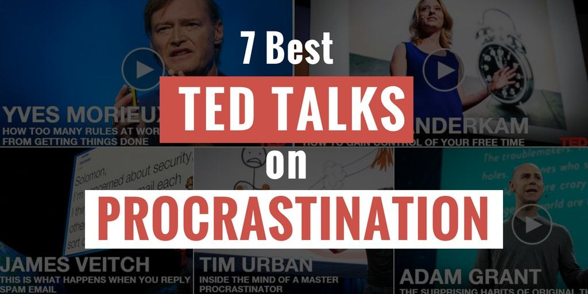

There I was, minding my own business...Why?This page left (un)intentionally blank
Why?
Dig Deeper!
About 5,000,000 results (0.43 seconds)

What have I learned?
Procrastinators:
Still get stuff done. Reaffirming why we procrastinate.Procrastinate ending procrastinary habits.Still get stuff done. Reaffirming why we procrastinate.Procrastinate ending procrastinary habits.Are safe from suicide.current self expect a lot from future self.future self hate past self for leaving everything to be done.Hate procrastinators, but love procrastinating.Finish a 30 minute job in 8 hours....and, finish an 8 hour job in 30 minutes....and that's how I ended up waiting until just now to write this presentation.Remember: Presentations are due Thursday.